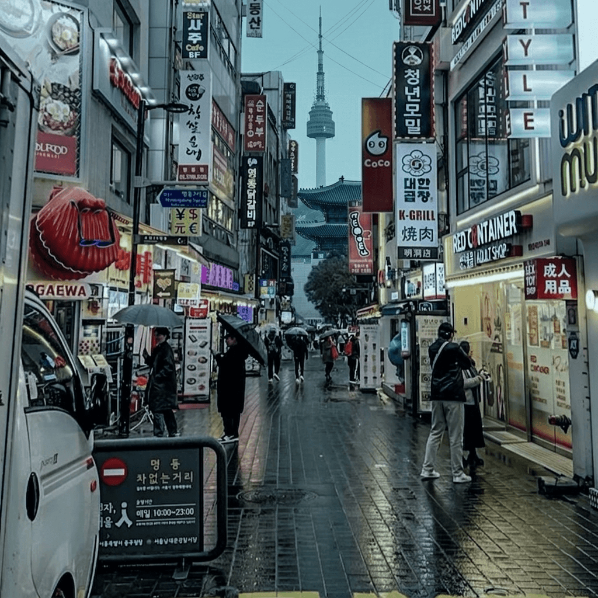
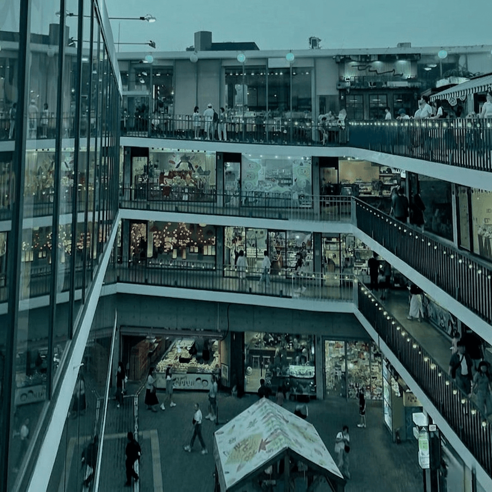

Bukchon Hanok Village
Bukchon Hanok Village is a charming neighborhood in Seoul that preserves the beauty of traditional Korean architecture. With its narrow lanes lined with restored hanok houses—traditional structures featuring distinctive sloped tile roofs and wooden frames—Bukchon offers a glimpse into Seoul's cultural heritage. Visitors can explore art galleries, quaint cafes, and boutique shops nestled within these historic buildings, creating a perfect blend of past and present in the heart of the modern city.

Myeongdong
Myeongdong is Seoul's vibrant shopping and entertainment district, pulsing with energy day and night. This bustling area is lined with international brands, luxury boutiques, and beauty shops that attract visitors from around the world. The streets come alive with neon lights, street food vendors, and countless restaurants offering everything from traditional Korean cuisine to global flavors. Beyond shopping, Myeongdong is a cultural hub where you can experience the modern, youthful spirit of Seoul, surrounded by towering buildings and an electric atmosphere that never stops.

Lotte World Tower
Lotte World Tower is a magnificent architectural marvel and an iconic landmark soaring high above the skyline of Seoul, South Korea. Standing at an astounding height of 555 meters (1,821 feet) with 123 stories, it is currently the tallest building in South Korea and ranks among the tallest structures in the entire world. Completed in 2017, the tower's sleek, tapered design is inspired by traditional Korean ceramics and calligraphy, beautifully blending modern engineering with cultural heritage. Inside, this vertical city houses a diverse vibrant mix of facilities, including luxury residences, a high-end hotel, premier office spaces, and a massive multi-story shopping mall. The crown jewel of the tower is Seoul Sky, a breathtaking observation deck located at the top, which offers visitors a spectacular 360-degree panoramic view of the entire capital city and the winding Han River. It has become a must-visit destination for tourists seeking to experience the perfect fusion of cutting-edge innovation and Korean elegance.

Insadong
Insadong is a vibrant and historic neighborhood located in the heart of Seoul, South Korea, celebrated as one of the city's most important cultural districts. It is a unique place where the past meets the present, characterized by a network of charming, narrow alleys lined with traditional Korean wooden houses (hanoks), art galleries, and antique shops. For decades, Insadong has been the ultimate destination for those looking to immerse themselves in authentic Korean heritage. Visitors can explore hundreds of shops selling high-quality traditional goods, including exquisite pottery, calligraphy materials, ancient books, and handmade hanji paper. The main street is also famous for its cozy traditional teahouses and restaurants serving local delicacies, making it a paradise for food and culture lovers. At the center of the neighborhood lies Ssamziegil, a multi-level open-air shopping complex known for its spiral walkway that showcases modern Korean crafts and unique souvenirs. Insadong captures the soulful essence of old Seoul, offering an unforgettable cultural escape amidst a bustling modern metropolis.

Dongdaemun Design Plaza - DDP
Dongdaemun Design Plaza (DDP) is a futuristic architectural masterpiece and a major urban landmark situated in the center of Seoul, South Korea. Designed by the world-renowned British-Iraqi architect Zaha Hadid, this iconic structure is famous for its neofuturistic design, characterized by powerful, flowing curves and a metallic facade made of over 45,000 unique aluminum panels. The building seamlessly blends into its surroundings, featuring a walkable park on its roof and a brilliantly illuminated exterior that glows beautifully at night. DDP serves as the absolute hub for South Korea's fashion and creative industries, hosting international exhibitions, conventions, and the famous Seoul Fashion Week. Inside, the massive multi-level complex houses vast exhibition halls, design museums, trendy retail shops, and historical restored areas that showcase Seoul's ancient fortress walls. It is a stunning visual marvel that perfectly embodies Seoul’s status as a global capital of innovation, art, and cutting-edge design.